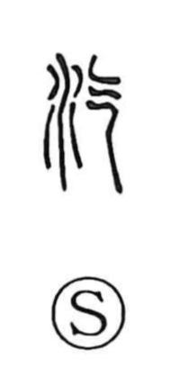

汽

Uncategorized
Kun: yuge, hotondo | On: ki
steam ・ vapor ・ almost
Explanation
汽 is a phono-semantic compound: the water element signals a watery domain, while the phonetic 气 (ki) depicts drifting clouds. Because clouds are laden with water, the character came to express water turning into vapor—yuge, steam. The phonetic also supplies the on reading ki, and by closeness to other ki-read characters such as 詭 and 幾, 汽 was at times used for the sense hotondo, “almost.” It remains familiar in compounds like 汽車 and 汽船 for steam-powered vehicles.